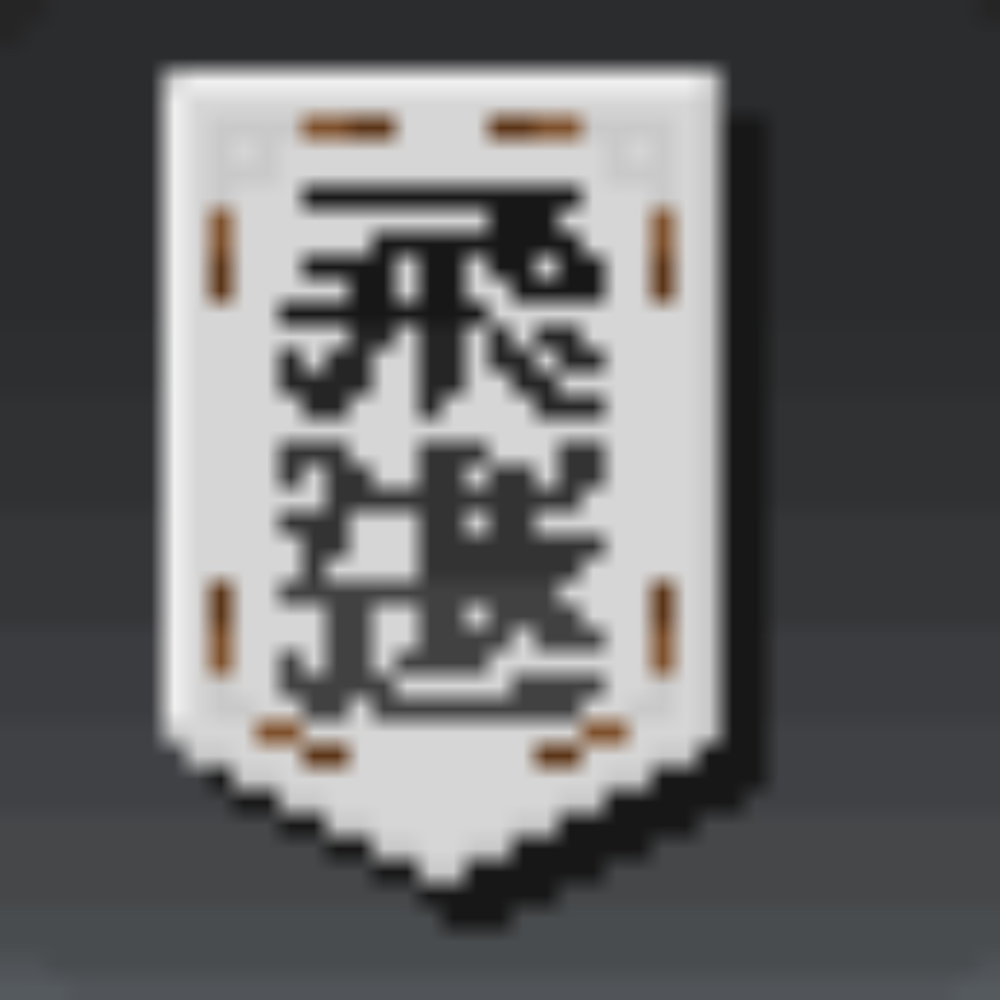

[황룡]
잠재력각인비서
일반 비서3%성공 확률
회
머니
사용할 비서의 횟수와 가격을 설정한 후 각인을 시도하세요.
빨간색 비서는 3%, 하얀색 비서는 5% 확률로 성공합니다.

각 1~10,000회 · 선택한 비서만 실행 · 성공 후에도 설정 횟수까지 진행
위 횟수와 관계없이 선택한 비서로 첫 성공까지 반복합니다.
| 시도 | 사용 비서 | 확률 | 결과 | 사용 금액 | 성공까지 비용 |
|---|
비서를 준비하고, 당신의 행운을 시험해 보세요.
직전 성공 다음 시도부터 비용을 합산합니다. 비서를 바꾸거나 나눠 실행해도 이어집니다.
기록 초기화는 설정을 유지합니다. 가격 변경은 이후 시도부터 적용됩니다.
새로고침하면 기록과 설정이 초기화됩니다.